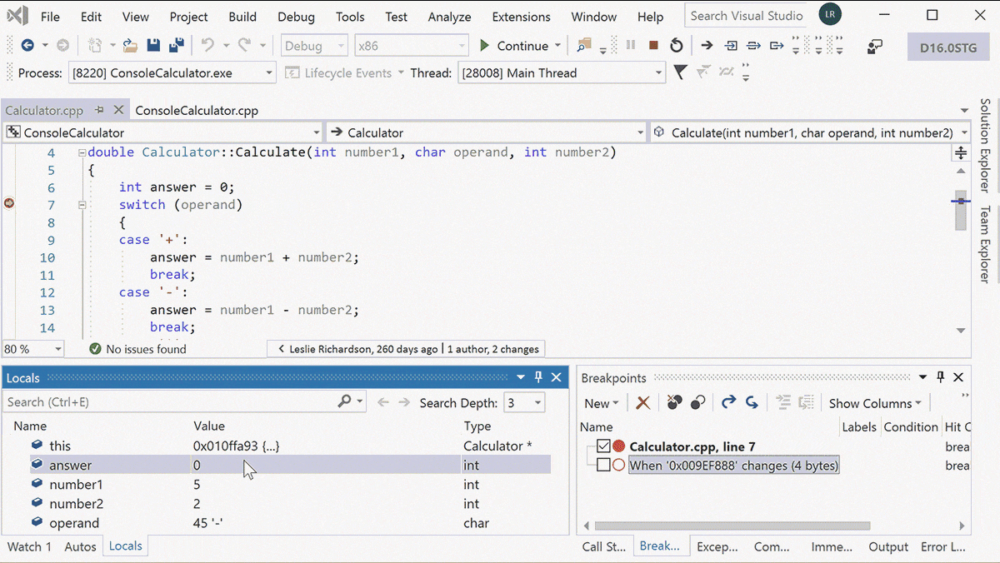

-
 开发
开发 -
分析
-
 Debug
Debug -
测试
-
 协作
协作 -
部署
编写没什么错误的代码
遇到困难时使用
IntelliSenseCode comletion including Complete Word and more
代码建议快速准确地键入变量。
无论导航到所需的任何文件、类型、成员或符号声明时的复杂程度如何，都保持一定的速度。
使用建议操作（例如重命名函数或添加参数）的灯泡快速改进代码。

了解有关代码的详细信息
CodeLens
Find references,code changes,bugs,and more
帮助你轻松找到重要见解，例如对代码所做的更改、这些更改的影响以及是否对方法进行了单元测试。
可一目了然地查看参考、作者、测试、提交历史记录和其他重要信息。
快速找到并修复bug
借助 Visual Studio，可以使用断点和所需方法在要检查 bug 时暂停代码执行。
如果一步过长或遇到了意外的更改，可以回退到任何特定代码行，而无需重启会话或重新创建状态。
有效工作
轻松导航和组织测试套件，以便分析测试的代码量并立即查看结果。
立即了解所做的每个更改的影响，并让高级功能在你键入代码时对其进行测试。
在错误发生时立即修复错误，并查看现有测试是否覆盖了新更改。
共享多个屏幕
轻松导航和组织测试套件，以便分析测试的代码量并立即查看结果。
立即了解所做的每个更改的影响，并让高级功能在你键入代码时对其进行测试。
在错误发生时立即修复错误，并查看现有测试是否覆盖了新更改。
针对云进行构建
使用适用于常见应用程序类型和本地 Azure 仿真程序的模板快速启动和运行，而无需 Azure 帐户。
还可以预配应用程序依赖项（例如 Azure SQL 数据库和 Azure 存储帐户），而无需离开 Visual Studio。
使用直接附加到应用程序的 Visual Studio 远程调试器快速诊断任何问题。